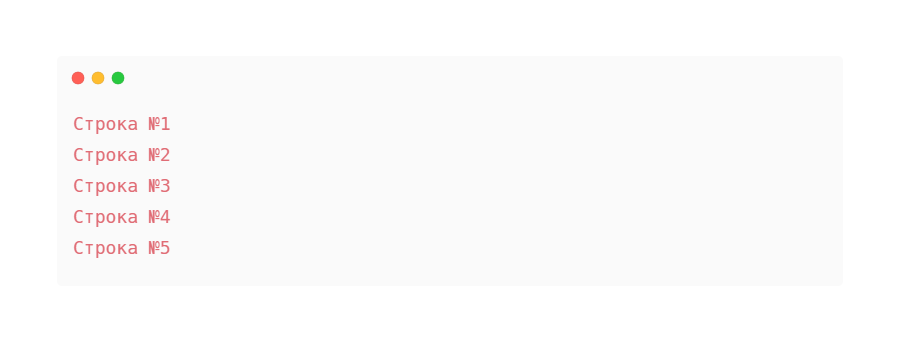
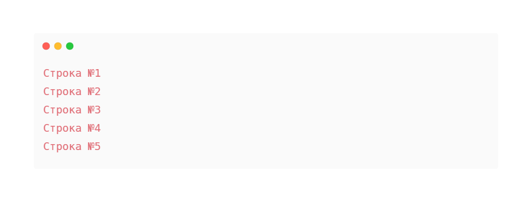
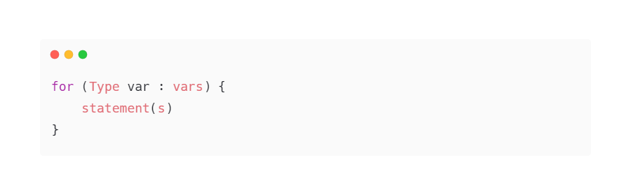
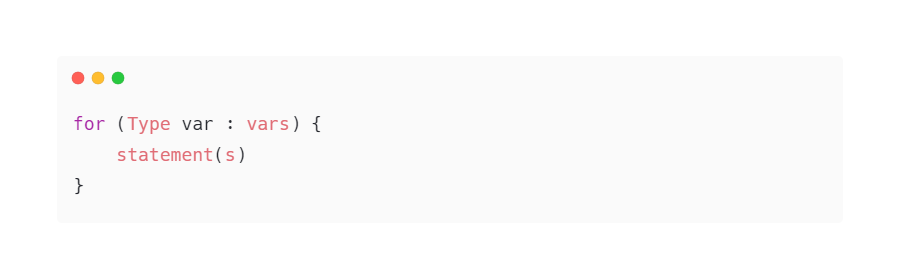

Что такое Циклы.
Циклы — это разновидность управляющих конструкций для организации многократного
выполнения одного и того же участка кода.
Код внутри такой управляющей конструкции выполняется циклично. Каждое выполнение кода — это итерация цикла.
Количество итераций регулируется условием цикла. Код, который выполняется внутри цикла, называют телом
цикла.
Известны такие виды циклов:
• Циклы с предусловием: условие выполнения определяется перед первой итерацией.
• Циклы с постусловием: условие выполнения определяется после первой итерации (поэтому они всегда
выполняются
минимум один раз). Полезны, когда нужно выполнять некое действие, пока не реализуется некое условие:
например, считывать ввод пользователя, пока он не введет слово “stop”.
• Циклы со счетчиком: количество итераций определяется смоделированным счетчиком. В условии цикла задается
его
начальное и конечное значение. Каждую итерацию счетчик наращивается. Мы можем заранее определить количество
итераций.
Эти циклы бывают полезны, когда нужно перебрать все элементы в какой-то коллекции. Циклы со счетчиком
называют “циклами для...”. “Для каждого элемента некоторой коллекции осуществить следующие
действия”.
Допустимы случаи, когда выполнение цикла можно прервать до достижения его условия. Например, если у нас есть
коллекция из 100 чисел и нам необходимо понять, содержит ли она отрицательные числа. Мы можем начать перебор
всех чисел, используя цикл “для”. Но когда мы найдем первое отрицательное число, нам не обязательно
перебирать оставшиеся числа. Мы можем прервать выполнение цикла, если его дальнейшее выполнение не имеет
смысла. Подобные ситуации называют прерыванием цикла.
• Безусловные циклы — циклы, которые выполняются бесконечно. Например: “Пока 1=1, печатать “1=1””. Такая
программа будет выполняться, пока ее вручную не прервут.
Данные циклы тоже бывают полезны, когда используются вместе с прерыванием цикла “изнутри”. Используйте их
осторожно, чтобы не спровоцировать зависание программы.
Подробнее с циклами в языке программирования Java можно познакомиться на 4-ом уровне курса JavaRush. В
частности, с циклами while и for.
Циклы в Java.
Теперь рассмотрим циклы в Java. В этом ЯП их есть несколько типов:
• while — цикл с предусловием;
• do..while — цикл с постусловием;
• for — цикл со счетчиком (цикл для);
• for each.. — цикл “для каждого…” — разновидность for для перебора коллекции элементов.
while, do.. while и for можно использовать в качестве безусловных циклов.
Сравнить синтаксис циклов в разных языках программирования можно на четвертом уровне обучения курса
JavaRush.
Например циклов for и while.
Рассмотрим кратко каждый из представленных типов.
Цикл While.
Этот цикл в Java структурно выглядит так:
 Здесь:
Здесь:
• expression — условие цикла, выражение, которое должно возвращать boolean значение.
• statement(s) — тело цикла (одна или более строк кода).
Перед каждой итерацией будет вычисляться значение выражения expression.
Если результатом выражения будет true, выполняется тело цикла — statement(s).
Пример:
 Вывод:
Вывод:
 Используя while, можно создать бесконечный цикл:
Используя while, можно создать бесконечный цикл:
 Чтобы прервать выполнение цикла, используется оператор break.
Чтобы прервать выполнение цикла, используется оператор break.
Например:
 Вывод:
Вывод:

Цикл do..while.
Структура do.. while выглядит так:
 Здесь:
Здесь:
• expression — условие цикла, выражение, которое должно возвращать boolean значение.
• statement(s) — тело цикла (одна или более строк кода).
В отличие от while, значение expression будет вычисляться после каждой итерации.
Если результатом выражения будет true, в очередной раз выполнится тело цикла — statement(s) (как минимум
раз).
Пример:
 Вывод:
Вывод:

Цикл for.
Этот Java цикл выглядит так:
 Здесь:
Здесь:
• initialization — выражение, которое инициализирует выполнение цикла. Исполняется только раз в начале цикла.
Чаще всего в данном выражении инициализируют счетчик цикла.
• termination — boolean выражение, которое регулирует окончание выполнения цикла. Если результат выражения
будет равен false, цикл for прервется.
• increment — выражение, которое исполняется после каждой итерации цикла. Чаще всего в данном выражении
происходит инкрементирование или декрементирование переменной счетчика.
• statement(s) — тело цикла.
Выражения initialization, termination, increment опциональны. Если опустить каждое из них, мы получим бесконечный цикл:
 Пример цикла for:
Пример цикла for:
 Вывод:
Вывод:
 

Цикл for each.
Этот цикл Java — разновидность цикла for для итерации коллекций и массивов.
Структура for each выглядит так:
 
Здесь:

Здесь:
• vars — переменная, существующий список или массив
• Type var — определение новой переменной того же типа (Type), что и коллекция vars.
Данную конструкцию можно прочитать так: “Для каждого var из vars сделать...”.
Предположим, у нас есть массив строк из названий дней недели. Выведем каждый элемент этого массива на печать:
 Вывод:
Вывод: